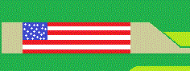
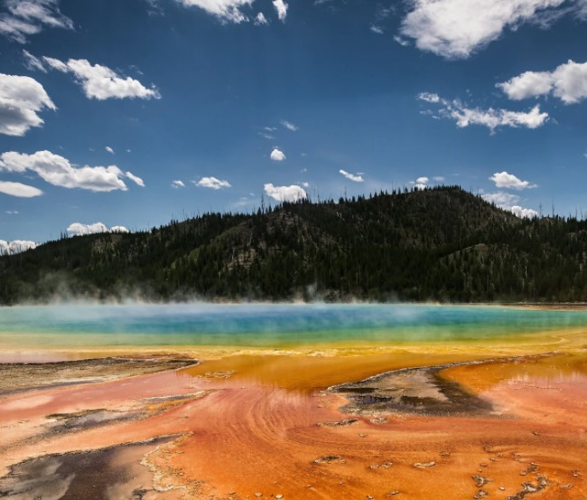

|  |
Ciekawe miejsca na świecie |
|
WitajCiekawe miejsce w USA:1. Giant Prismatic Spring: Yellowstone, WyomingGejzer w Yellowstone to największy gejzer w całych Stanach Zjednoczonych i trzeci pod względem wielkości na całym świecie. Wyprzedzają go tylko nowozelandzki Frying Pan Lake i Boiling Lake w Dominice. Nieziemski kolor źródło zawdzięcza pigmentowi wydzielanemu przez bakterię mieszkającą w jego wodzie. Nie można w nim co prawda zmoczyć stóp, choć miałoby się na to ochotę. Ale można porobić świetne zdjęcia.
© Strona została stworzona przez Mateusza Stanikowskiego |